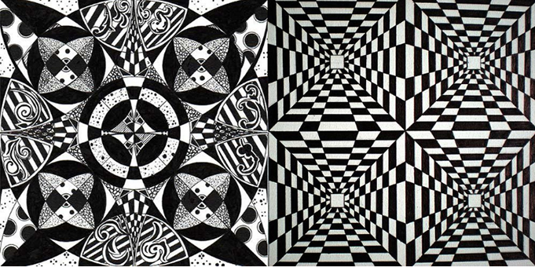
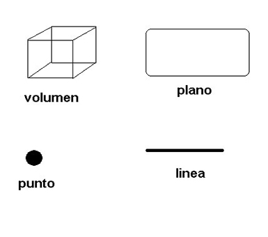
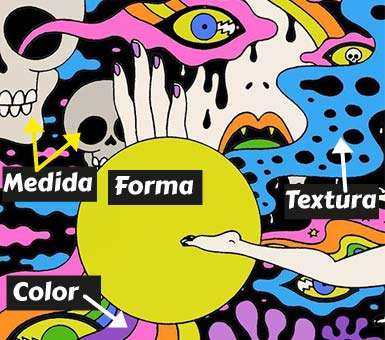
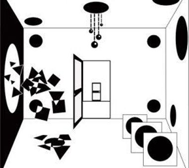

Los fundamentos del diseño gráfico es el conjunto de elementos que ayudan a concebir, organizar, proyectar y realizar comunicaciones visuales u obras gráficas.

Elementos Conceptuales
Aquí entra en juego la forma en que estos elementos no son visibles a simple vista.
El punto marca posición en el espacio
La línea es la sucesión de puntos y tiene longitud pero no ancho
El plano es una superficie plana con largo y ancho, posición, dirección y está limitado por líneas, las cuales lo forman.
El volumen es un objeto gráfico que crea un espacio tridimensional con sus características de ancho, altura y profundidad.

Elementos Visuales
Estos elementos, como su nombre indica, son visibles y están creados por formas con líneas, colores, texturas (según el material utilizado), ancho… componen el principal lenguaje visual del concepto, formas y figuras. Es decir, lo visual no es lo que percibes sino su nivel semántico y conceptual.
Forma, todo lo visible tiene una forma que el ojo percibe e identifica el objeto.
Medida, tamaño o escala es relativo. Un mismo elemento gráfico puede parecer grande o pequeño según la ubicación, el color y los elementos que le rodean.
Color, el ojo humano puede distinguir entre 10000 colores y aquí no solo se habla de color del espectro solar, RGB, sino también a los neutros negro, blanco y grises, además de sus variaciones cromáticas
Textura, tiene que ver con el tipo de material utilizado y el resultado al usarlo+, puede atraer tanto al sentido del tacto como al visual

Elementos de Relación
Depende del modo en el que relacionas las formas utilizadas dan una interpretación y significado a un diseño.
Dirección, al igual que la escala, la dirección depende de cómo esté relacionada con el receptor, el marco que lo contiene y las otras formas que tengan a su alrededor.
Posición, depende de la estructura u otro elemento que la contenga.
Espacio, todo ocupa un lugar, un espacio y puede ser visible e ilusorio dando una sensación de profundidad que realmente no hay. Lo crea la ubicación, el tamaño, posición, color.. que se le da a la forma.
Gravedad, este elemento de relación a mi parecer es muy potente porque este efecto puede crearse no solo de manera visual, sino por medio de la psicología, atribuyendo connotaciones de estabilidad o inestabilidad.

Elementos Prácticos
son aquellos que tienen una interpretación subjetiva y a los que podemos dotar de un significado.
Representación, ¿de qué manera has realizado el diseño? Puede ser un diseño realista, estilizada, abstracta, cubista…
Significado, es lo que marca el diseño puede ser consciente o subconsciente pero todo marca un mensaje.
Función, la razón por la que se ha creado dicho diseño